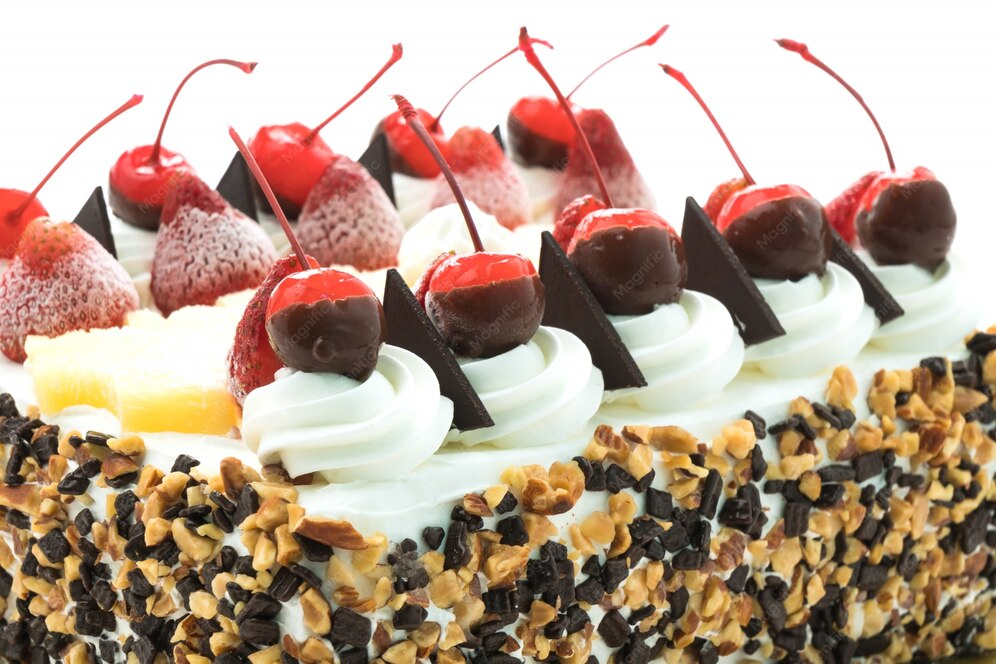

Doces · Tortas e bolos
Bolo de sorvete com cerejas

Ingredientes
- 2 xícaras de sorvete crocante industrializado
- Cerca de 200 g de biscoitos champanhe
- Licor Cointreau
- 2 xícaras de sorvete de baunilha ou creme
- ⅓ xícara de cobertura de chocolate ralada
- 2 xícaras de creme de leite fresco
- 1½ xícaras de cerejas em conserva ou cristalizadas
Modo de preparo
- Forre o fundo de uma forma quadrada (~1,5 l) com papel-manteiga.
- Camada de sorvete crocante e biscoitos champanhe embebidos em Cointreau.
- Cubra com sorvete de baunilha; refrigere e congele.
- Derreta o chocolate; bata o creme de leite e misture o chocolate frio. Congele o creme separadamente.
- Descongele na geladeira; decore com creme em saco de confeitar e cerejas.
Observação
Mantenha o chocolate derretido perto de fonte de calor ao esfriar para não endurecer.